# Installng packages
install.packages("ggplot2")
devtools::install_github("statmanrobin/Stat2Data")
# Loading required packages
library(ggplot2)
library(Stat2Data)
# Loading the Hawks dataset
data("Hawks")After going through Chapter 1 you would be now familiar with the different types of graphs that you can plot using ggplot2. So for this tutorial, we will be learning how to customize those ggplot graphs to our liking. We will learn how to tweak the aesthetics, how to change labels and how to modify and change the axes in a graph.
So let us plot a graph from scratch and learn how to use different aesthetics available.
1 Setting up the prerequisites
First, we need to install the ggplot2 package in R as it does not come in the standard distribution of R. For the dataset, we will first download the Stat2Data package which houses a lot of cool datasets. For this tutorial let us use the Hawks dataset which showcases body measurements from three different species of Hawks. This data was collected by students and faculty at Cornell College in Mount Vernon and the dataset was made available by late Prof. Bob Black at Cornell College.
- To install packages in R we use the command
install.packages()and to load packages we use the commandlibrary(). Therefore to install and load ggplot2 and{Stats2Data}packages we use the following lines of command. Call theHawksdata using thedata()command.
- Let us look at how the dataset is structured. Use
str()command
'data.frame': 908 obs. of 19 variables:
$ Month : int 9 9 9 9 9 9 9 9 9 9 ...
$ Day : int 19 22 23 23 27 28 28 29 29 30 ...
$ Year : int 1992 1992 1992 1992 1992 1992 1992 1992 1992 1992 ...
$ CaptureTime : Factor w/ 308 levels " ","1:15","1:31",..: 181 25 138 42 62 71 181 88 261 192 ...
$ ReleaseTime : Factor w/ 60 levels ""," ","10:20",..: 1 2 2 2 2 2 2 2 2 2 ...
$ BandNumber : Factor w/ 907 levels " ","1142-09240",..: 856 857 858 809 437 280 859 860 861 281 ...
$ Species : Factor w/ 3 levels "CH","RT","SS": 2 2 2 1 3 2 2 2 2 2 ...
$ Age : Factor w/ 2 levels "A","I": 2 2 2 2 2 2 2 1 1 2 ...
$ Sex : Factor w/ 3 levels "","F","M": 1 1 1 2 2 1 1 1 1 1 ...
$ Wing : num 385 376 381 265 205 412 370 375 412 405 ...
$ Weight : int 920 930 990 470 170 1090 960 855 1210 1120 ...
$ Culmen : num 25.7 NA 26.7 18.7 12.5 28.5 25.3 27.2 29.3 26 ...
$ Hallux : num 30.1 NA 31.3 23.5 14.3 32.2 30.1 30 31.3 30.2 ...
$ Tail : int 219 221 235 220 157 230 212 243 210 238 ...
$ StandardTail: int NA NA NA NA NA NA NA NA NA NA ...
$ Tarsus : num NA NA NA NA NA NA NA NA NA NA ...
$ WingPitFat : int NA NA NA NA NA NA NA NA NA NA ...
$ KeelFat : num NA NA NA NA NA NA NA NA NA NA ...
$ Crop : num NA NA NA NA NA NA NA NA NA NA ...So there is a lot of information in the dataset which we can use for plotting. So let us try plotting them.
2 Building a plot
One thing to remember here is that how ggplot2 builds a graph is by adding layers. Let us start by plotting the basic layer first where the x-axis shows ‘weight of the hawks’ and the y-axis shows ‘wingspan of the hawks’.

Wait a sec! Where are my data points? So right now if we look at the syntax of the ggplot code we can see that we have not told ggplot2 which geometry we want. Do we want a scatter plot or a histogram or any other type of graph? So let us plot a scatter plot first. Use geom_point() command. By adding geom_point() to the ggplot() command is equivalent to adding an extra layer to the already existing layer that we got previously. Let us also use theme_bw() for a nice looking theme.
library(ggplot2)
library(Stat2Data)
data("Hawks")
ggplot(data = Hawks, aes(x = Weight, y = Wing)) + geom_point() +
theme_bw()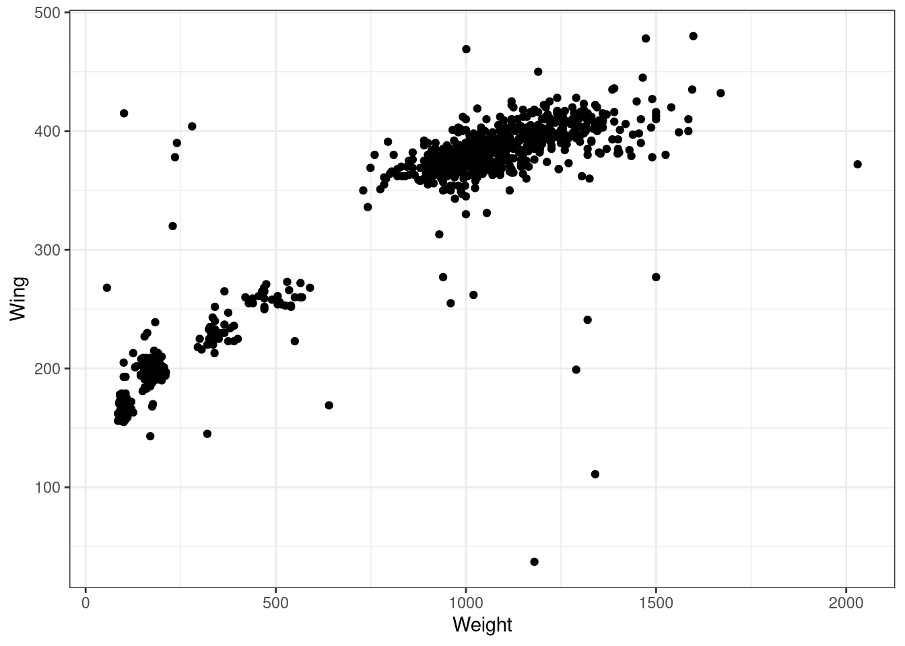
We got the graph! but we also got a warning message. The warning message tells us that the dataset which we had used to plot the graph had 11 rows of NA values and which could not be plotted into the graph. In real-life cases, we can have datasets with NA values due to various reasons, so this is fine.
Now, this graph even though shows us data points we are not sure which point belongs to which species, as this dataset contains data for three species of Hawks. So let us try giving different colours to the points concerning the different species so that we are able to differentiate them.
2.1 Changing colour
- To change colour of the ‘element’ as a function species, we have to add
colour = Specieswithin theaes()of the ggplot command. I use the general term ‘element’ here to emphasize that the same change in aesthetics will work for most of other types of geometries in ggplot2 (something which you have seen extensively in Chapter 1. Like for a line graph, the ‘element’ would be lines. Here we have a scatter plot, so the ‘element’ would be points.
Also note that, in addition to colour, R also recognizes color and col wordings and they function the same as colour.
library(ggplot2)
library(Stat2Data)
data("Hawks")
ggplot(data = Hawks, aes(x = Weight, y = Wing, colour = Species)) +
geom_point() + theme_bw()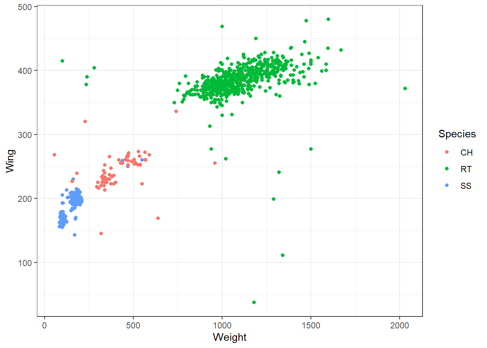
The species abbreviations are the following: CH=Cooper’s, RT=Red-tailed, SS=Sharp-Shinned.
Now, this graph is way better than the previous one.
2.2 Changing point shape.
- Now instead of the colour let us change the shape of the point. Use
shape()command inaes()
library(ggplot2)
library(Stat2Data)
data("Hawks")
ggplot(data = Hawks, aes(x = Weight, y = Wing, shape = Species)) + # instead of colour use shape.
geom_point() + theme_bw() 
Now we did change the shape of points but it is still hard to make out the difference. Let us try specifying colour along with the shape
- Adding both
colourandshapein aesthetics
library(ggplot2)
library(Stat2Data)
data("Hawks")
ggplot(data = Hawks, aes(x = Weight, y = Wing,
colour = Species, shape = Species)) + geom_point() + theme_bw()
This plot is much better than the previous one.
Now let us try specifying colour within the aes() of the geom()
library(ggplot2)
library(Stat2Data)
data("Hawks")
ggplot(data = Hawks, aes(x = Weight, y = Wing, shape = Species)) +
geom_point(aes(colour = Species)) + theme_bw()
We got the same graph as before! So what is the difference in specifying colour within aes() of ggplot() compared to the same but within geom_point(). Here Let us look at another example.
library(ggplot2)
library(Stat2Data)
data("Hawks")
ggplot(data = Hawks, aes(x = Weight, y = Wing, colour = "red")) +
geom_point() + theme_bw()
I manually changed the colour of the points to red colour. Please not that you can also use hex codes to specify the colour attribute. Now let try specifying colour to the aes() within the geom()
library(ggplot2)
library(Stat2Data)
data("Hawks")
ggplot(data = Hawks, aes(x = Weight, y = Wing, colour = "red")) +
geom_point(aes(colour = Species)) + theme_bw()You can see that the red colour is overridden by other colours. So the aes() mapping (in this case colour) within geom_point() will override any aes() mapping within ggplot(). And whatever aes() mapping we give within ggplot() will be inherited by all other geom layers that are specified.
Let us see another case.
Show the code
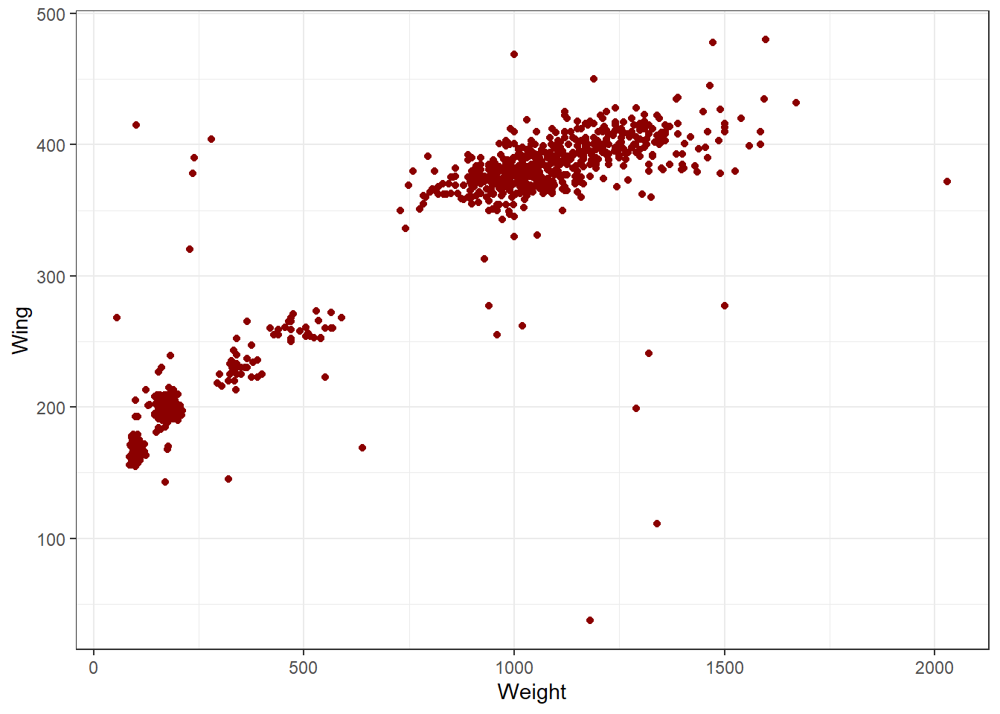
Show the code

If you compare both the codes, the only difference is that the colour = "darkred" command was outside aes() in the first code and inside aes() in the second code. So why didn’t the second graph have the same dark-red coloured points as the first one? The reason is that in the first code we are explicitly told to have all data points to be coloured dark-red but that is not the case with the second code. In the second code, since we have specified it inside aes(), ggplot is trying to look for a variable called “darkred” inside the dataset and colour it accordingly. This is why the legend that appears in the second graph has listed “darkred” as a category. And ggplot fails to find the variable called “darkred” but it still recognizes the colour command line and colour all the points in red. So the bottom line is that R has a pre-determined way of reading a code, so we users should well-understand what each line is expected to do and should not expect R to just fill it in accordingly to what we write.
Now let us try a few other examples;
2.3 Changing size
- Use
size()inaes(). The shape aesthetic works best if the input variable is categorical.
2.4 Changing colour, shape and size manually
- Use
scale_shape_manual()for changing shape, similarlyscale_color_manual()for changing colour andscale_size_manual()for changing size of the element.
library(ggplot2)
library(Stat2Data)
ggplot(data = Hawks, aes(x = Weight, y = Hallux, colour = Species,
shape = Species, size = Species)) +
geom_point() +
scale_shape_manual(values=c(1, 2, 3)) +
scale_color_manual(values=c('red','blue', 'green')) +
scale_size_manual(values=c(1,5,10)) + theme_bw()

2.5 Changing the opcaity of the elements
- Use
alpha()within thegeom()with a numeric value to change the opacity of the elements. This is useful for visualizing large datasets such as this.
library(ggplot2)
library(Stat2Data)
ggplot(data = Hawks, aes(x = Weight, y = Wing, colour = Species)) +
geom_point(alpha = 1/5) + theme_bw()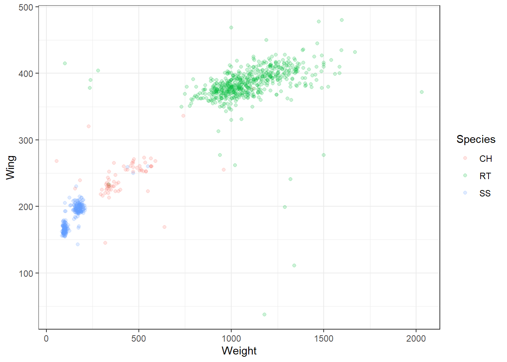
The same commands also work for most of the other types of geom(). Now let us see a few other aesthetics in other types of geoms.
2.6 Changing fill colour
- Use
fill()inaes()
library(ggplot2)
library(Stat2Data)
ggplot(data = Hawks, aes(x = Weight, fill = Species)) +
geom_histogram(bins = 25) + theme_bw()
- Use
scale_fill_manual()to manually change the colours.
library(ggplot2)
library(Stat2Data)
ggplot(data = Hawks, aes(x = Weight, fill = Species)) +
geom_histogram(bins = 25) + theme_bw() +
scale_fill_manual(values = c("darkred", "darkblue", "darkgreen"))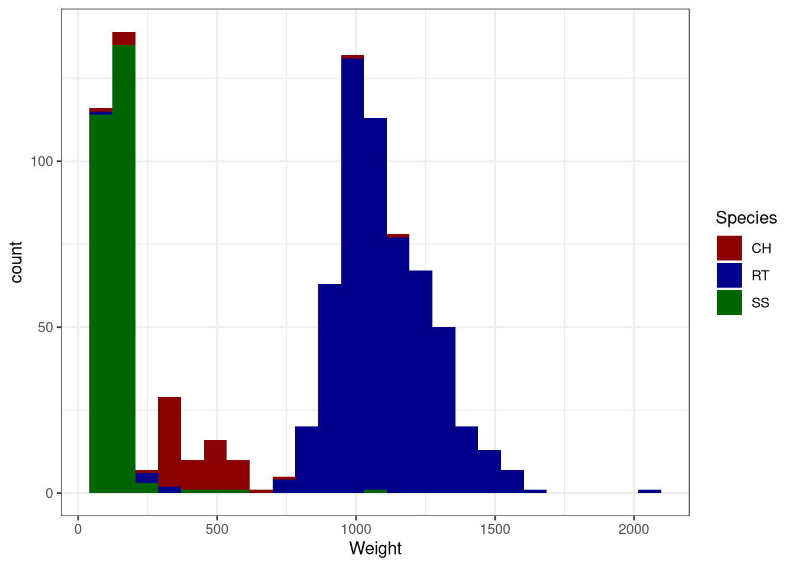
2.7 Changing line type
- Use
linetypeinaes()
library(ggplot2)
library(Stat2Data)
ggplot(data = Hawks, aes(x = Weight, y = Wing, linetype = Species)) +
geom_line() + theme_bw()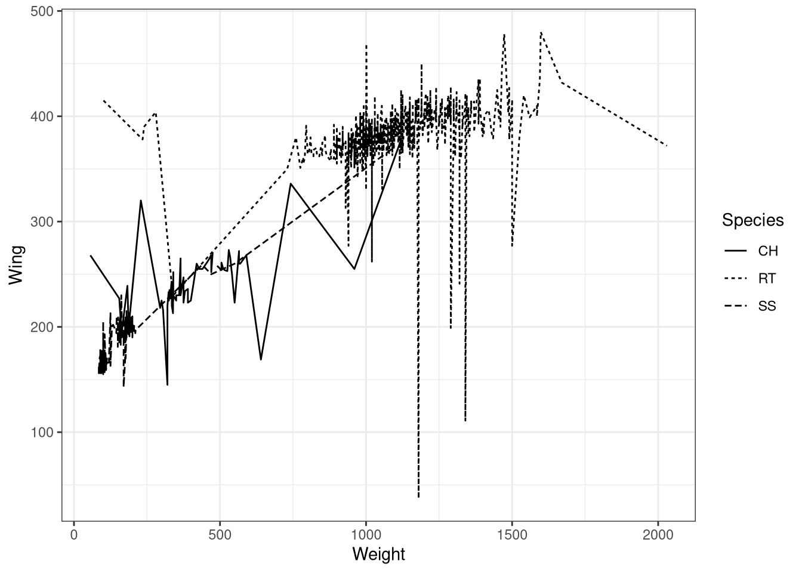
- You can manually change line types using
scale_linetype_manual()
library(ggplot2)
library(Stat2Data)
ggplot(data = Hawks, aes(x = Weight, y = Wing, linetype = Species)) +
geom_line() +
scale_linetype_manual(values= c("twodash", "longdash", "dotdash")) +
theme_bw()

Now let us also see how to change the labels in a graph.
2.8 Viewing datapoints as labels
- You can plot data points as their values or as their labels using the
geom_text()function.
library(ggplot2)
library(Stat2Data)
data("Hawks")
# Plotting the values
ggplot(data = Hawks, aes(x = Weight, y = Wing)) +
geom_text(aes(label = Wing)) + theme_bw()
# Plotting the values according to species text label
ggplot(data = Hawks, aes(x = Weight, y = Wing)) +
geom_text(aes(label = Species)) + theme_bw()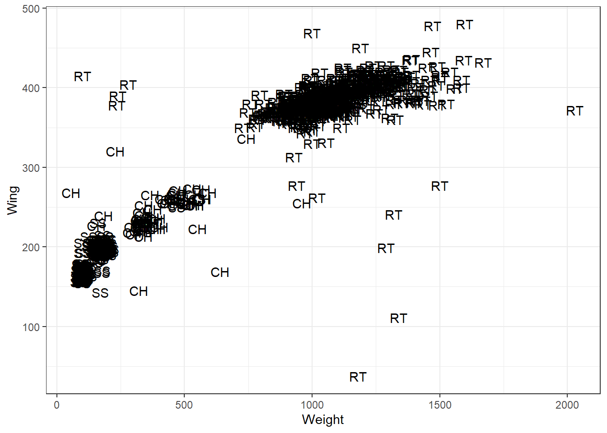
2.9 Changing labels in the axes
- Use
xlab()to change x-axis title,ylab()to change y-axis title,ggtitle()withlabelandsubtitleto add title and subtitle respectively.
library(ggplot2)
library(Stat2Data)
ggplot(data = Hawks, aes(x = Weight, y = Wing, colour = Species)) +
geom_point() + theme_bw() + xlab("Weight (gm)") + ylab("Wing (mm)") +
ggtitle(label = "Weight vs Wing span in three different species of Hawks",
subtitle = "CH=Cooper's, RT=Red-tailed, SS=Sharp-Shinned")
- The same result can be obtained by using
labs()to specify each label in the graph. For renaming the legend title, the command will depend on what is there within theaes()or in other words what is the legend based on.
library(ggplot2)
library(Stat2Data)
ggplot(data = Hawks, aes(x = Weight, y = Wing, colour = Species)) +
geom_point() + theme_bw() + labs(x = "Weight (gm)", y = "Wing (mm)",
title= "Weight vs Wing span in three different species of Hawks",
subtitle = "CH=Cooper's, RT=Red-tailed, SS=Sharp-Shinned",
caption = "Source: Hawk dataset from Stat2Data r-package", #caption for the graph
colour = "Hawk Species", # rename legend title
tag = "A") #figure tag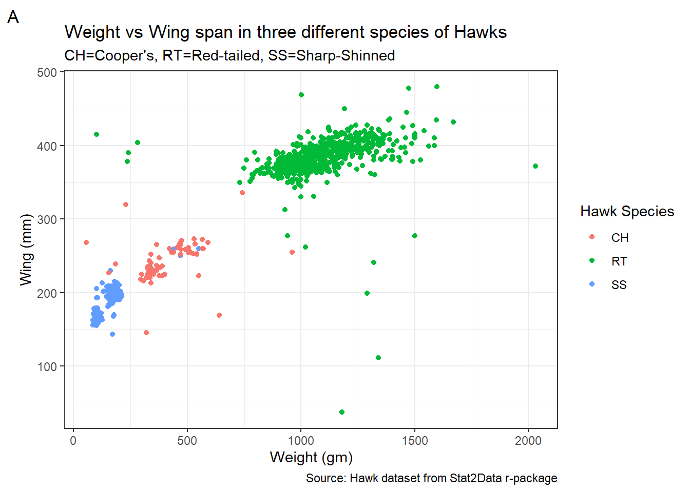
2.10 Tweaking the axes
library(ggplot2)
library(Stat2Data)
ggplot(data = Hawks, aes(x = Weight, y = Wing, colour = Species)) +
geom_point() + theme_bw() + xlim(c(0,1000)) + ylim(c(200,350))
- Use
coord_cartesian()to zoom in on a particular area in the graph
library(ggplot2)
library(Stat2Data)
ggplot(data = Hawks, aes(x = Weight, y = Wing, colour = Species)) +
geom_point() + theme_bw() + coord_cartesian(xlim = c(0,1000),
ylim = c(200,350))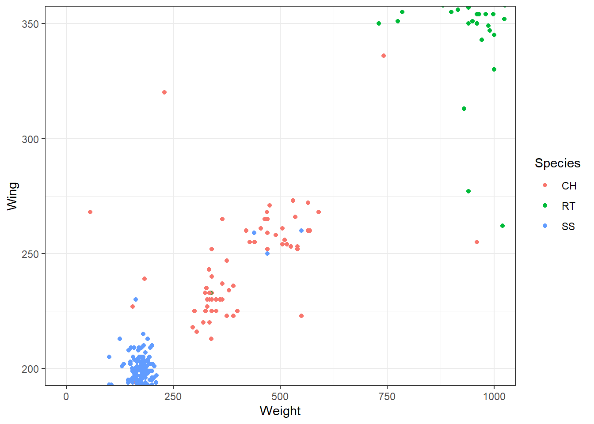
- Use
coord_flip()to flip the x and y axes.
library(ggplot2)
library(Stat2Data)
ggplot(data = Hawks, aes(x = Weight, y = Wing, colour = Species)) +
geom_point() + theme_bw() + coord_flip()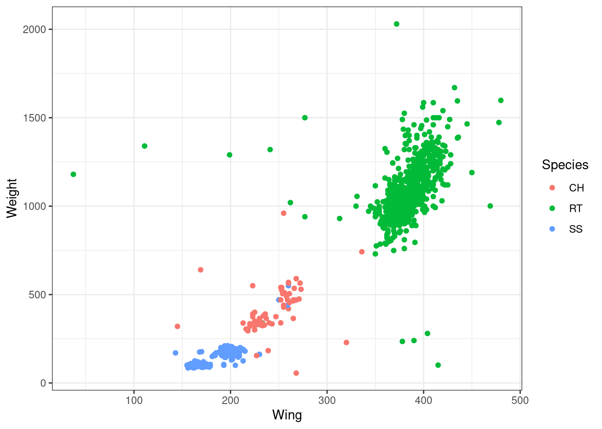
- Use
scale_x_continuous()for tweaking the x-axis. The same command work for the y-axis also. You can includelabel()inside the command to manually label the breaks of the axes.
Show the code
library(ggplot2)
library(Stat2Data)
ggplot(data = Hawks, aes(x = Weight, y = Wing, colour = Species)) +
geom_point() + theme_bw() + scale_x_continuous(breaks = c(0,1000,2000))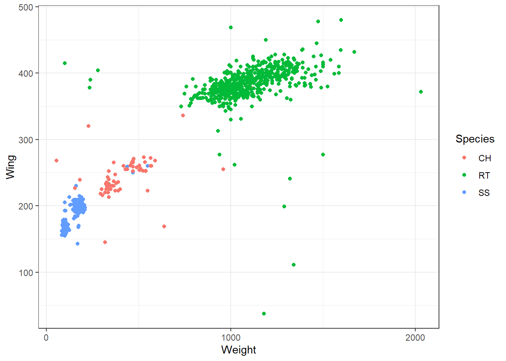
Show the code

- Use
scale_y_reverse()to display the y values in the descending order. Same command applies to x-axis also.
library(ggplot2)
library(Stat2Data)
ggplot(data = Hawks, aes(x = Weight, y = Wing, colour = Species)) +
geom_point() + theme_bw() + scale_y_reverse()
3 Typical aesthetic mappings
| Aesthetic | Description |
|---|---|
| x | X axis position |
| y | Y axis position |
| fill | Fill colour |
| color | Colour points, outlines of other geoms |
| size | Area or radius of points, thickness of the lines |
| alpha | Transparency |
| linetype | Line dash pattern |
| labels | Text on a plot or axes |
| shape | Shape |
We are now familiar with all these different aesthetic mappings.
4 Summary
In this tutorial, we learned how to modify aesthetic present for different geoms in ggplot2 Then we learned how to modify labels in a graph and finally, we learned how to modify and change the axes elements. This tutorial is in no way exhaustive of the different ways you can modify a graph as there many more methods which are not discussed here. Instead of trying to include everything, this tutorial tries to be a stepping stone to help students of R to learn the basics of tweaking a graph. Try to practice what is covered here using other datasets available in the r-package Stat2Data.
5 References
H. Wickham. ggplot2: Elegant Graphics for Data Analysis. Springer-Verlag New York, 2016. Read more about ggplot2 here. You can also look at the cheat sheet for all the syntax used in
ggplot2. Also check this out.Ann Cannon, George Cobb, Bradley Hartlaub, Julie Legler, Robin Lock, Thomas Moore, Allan Rossman and Jeffrey Witmer (2019). Stat2Data: Datasets for Stat2. R package version 2.0.0. https://CRAN.R-project.org/package=Stat2Data
Last updated on
[1] "2022-08-28 11:11:59 IST"Reuse
Citation
BibTeX citation:
@online{johnson2021,
author = {Jewel Johnson},
editor = {},
title = {Chapter 2: {Customizing} Graphs in Ggplot2},
date = {2021-12-04},
url = {https://one-carat-blog.netlify.app//tutorials/data_viz/ggplot_2.html},
langid = {en}
}
For attribution, please cite this work as:
Jewel Johnson. 2021. “Chapter 2: Customizing Graphs in
Ggplot2.” December 4, 2021. https://one-carat-blog.netlify.app//tutorials/data_viz/ggplot_2.html.